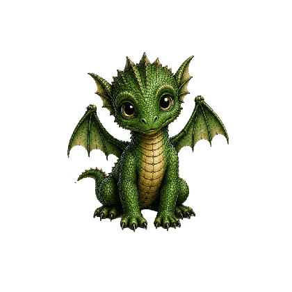
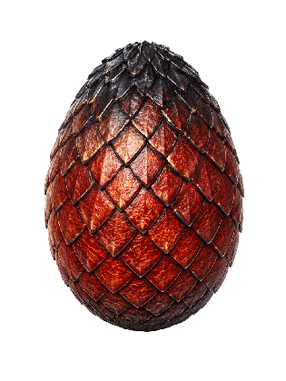
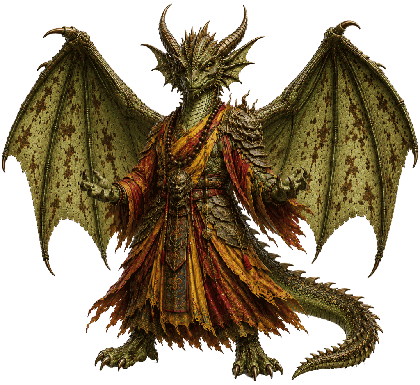
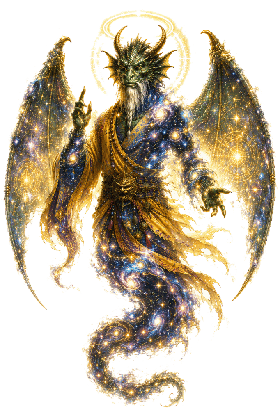
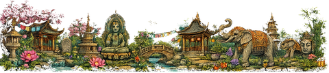

Más de 195 meditaciones guiadas, 17 mundos inmersivos, un dragón compañero y un diario de tu evolución — sin pagar nunca nada.

Enseñar a meditar y acompañar tu desarrollo espiritual. Eso es todo. Sin suscripción oculta, sin anuncios, sin cuenta que crear, sin datos recopilados: abres la app y respiras.

De los primeros pasos a las exploraciones más profundas. Cada categoría es un universo: ilustración, voz, ambiente y tono propios.

Diez breves sesiones para sentar las bases: postura, respiración, atención.
10 meditaciones
Todas las meditaciones que se reproducen sin internet — respiración, sueño, anclaje, chakras + todas las meditaciones en vivo disponibles en un lugar a elegir (bosque, cueva, montaña, templo, cosmos).
13 meditaciones
Meditaciones cortas completamente fuera de línea — encuentra la calma, reencuéntrate, o duerme en cuatro minutos.
5 meditaciones
Sueños lúcidos, sueño, sentido de los sueños.
3 meditaciones
Visita las vidas que han precedido a esta.
9 meditaciones
Conoce las voces que caminan contigo.
13 meditaciones
Tercer ojo, astral, mundos simbólicos.
17 meditaciones
Respiración, chakras, sonidos, reinicio nervioso.
13 meditaciones
Viaja más allá. Estrellas, vacío, la inmensidad interior.
9 meditaciones
Templos, bosques, montañas, océanos, fuego.
18 meditaciones
Encuentra lo que has evitado, con suavidad.
12 meditaciones
Reencuentros, memorias transgeneracionales, acceso a los anales: el viaje hacia lo que nos trasciende.
5 meditaciones
Viajes a los mundos de abajo, de arriba, del medio. Animal de poder, alma de los lugares, caldero celta.
6 meditaciones
Calmar la ansiedad, las tensiones, la agitación mental, dormir mejor.
10 meditaciones
Amor, gratitud, compasión, perdón — cultivar el corazón interior.
10 meditaciones
Abordar el miedo con técnicas de expertos: RAIN, oscilación somática, auto-compasión, defusión cognitiva.
8 meditacionesTres categorías dedicadas a técnicas de trance, micro-desapego y viajes astrales — para exploradores.
5 ejercicios preparatorios basados en la hipnosis ericksoniana, la relajación fraccionada de Monroe y la visualización progresiva: descenso en trance, inducción fraccionada, pantalla mental, sentidos sutiles, visualización por niveles.
5 meditaciones8 micro-gestos de separación a practicar ANTES de cualquier salida completa: sacar solo una mano fantasma, dejarse llevar por un imán imaginario, deslizarse en un tobogán mental, desalinearse 2 centímetros. Ideal para principiantes que se bloquean.
8 meditaciones10 técnicas clásicas (cuerda, rodamiento, rotación, vórtice...) + 11 protocolos avanzados (doble, objetivo, espejo, cartografía, protocolo de los primeros metros). Cada sesión termina en silencio: permaneces en el estado.
21 meditacionesUn mundo es un viaje completo (4, 10 o 20 minutos) con su paisaje, su luz, sus sonidos y su relato. Tú eliges dónde entrar.

Un templo sagrado oculto en lo alto de montañas brumosas.

Un templo divino que flota más allá de lo real, sobre las estrellas.

Un mundo de cristal luminoso y sin fin, en las profundidades de la tierra.

Flota en paz por el espacio cósmico profundo.

Un mundo oculto en lo más profundo de la Tierra.

Un antiguo santuario alienígena bajo el hielo antártico.

Una isla tropical apacible que flota sobre las nubes.

Un jardín japonés tradicional de calma perfecta.

Una civilización submarina perdida, de serenidad profunda.

Un monasterio sagrado en lo alto de las montañas, al alba.

Una biblioteca infinita que flota más allá de lo real.

Un oasis místico bajo un cielo del desierto colmado de estrellas.

Un árbol sagrado inmenso, unido a toda la vida.

Una antigua ciudad perdida, reclamada por la selva.

Un bosque de sueños, surreal y luminoso.

Un reino de reflejos, de conciencia infinita.

Un bosque a la luz de la luna, guardado por antiguos espíritus lobo.
Antes de ciertas meditaciones eliges el decorado por el que te lleva la voz. El tema de la sesión se teje con las sensaciones del lugar.

Raíces, musgo, sendero oculto

Descenso hacia lo invisible

Aire puro, horizonte vasto

Incienso, umbral, silencio

Sin peso, vasto, vivo
Más allá de las meditaciones, la app se convierte poco a poco en tu cuaderno de viaje interior.
Crea tus lugares interiores — bosque, cueva, templo, isla… — y vuelve a meditar allí.
Anota los guías encontrados en meditación: su tipo, sus mensajes, sus reapariciones.
Los objetos recibidos en viaje interior, guardados y descritos, con su sentido para ti.
Un diario personal estructurado: sueños, gratitud, emociones, señales… y un historial de cada meditación con tus impresiones.
Tu compañero crece con tu práctica (11 etapas) y su isla evoluciona con él — roca, pradera, árbol, cascada, cristal, templo, cosmos.
Sellos para coleccionar: meditaciones, mundos, guías, rachas, insignias de constancia.
Un consejo del día adaptado a la hora, a tu constancia y a tu programa personal del cuestionario inicial.
1 meditación = 1 punto, 1 entrada = 1 punto. La mitad de cada categoría es libre desde el inicio; todo se abre a los 30 puntos.
Encuentra una meditación por palabra clave — dormir, estrés, confianza, niño interior, chakra…
Un recordatorio suave cada día o solo ciertos días, a la hora que quieras.
Seis pasos de 0,75× a 1×, tono preservado. Y un ritmo personal para las pausas entre frases.
Lluvia, bosque, cuenco tibetano… un fondo sonoro durante la sesión, a tu volumen.
Una biblioteca ilustrada para empezar: postura, respiración, atención, con esquemas en tu idioma.
Descarga tus meditaciones y mundos: se reproducen sin red, para siempre.

Huevo
Guardián
CósmicoLa presentación en vídeo llegará aquí muy pronto.

Nada que registrar, nada que esperar: la app simplemente estará ahí, gratis. Esta página se actualizará con los enlaces de descarga.
Awakening Minds es una herramienta de aprendizaje y bienestar. No constituye un consejo médico, un diagnóstico ni un tratamiento, y nunca sustituye el acompañamiento de un profesional.